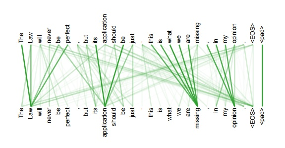

在上一篇介绍Attention时, 就提到了Transformer, 那么什么是Transformer呢, 一句话概括的话, 大概就是用Self-Attention实现的Encoder-Decoder, 下面进行详细的讲解.
简介
在讲具体的结构之前, 来整体看一下Transformer的模型结构, 如下图:
作为Encoder-Decoder框架, 比较明显的, 其左边部分是Encoder, 而右边部分是Decoder.
Transformer一个经典的自然语言处理任务就是翻译, 比如从中文翻译到英文. 左边Encoder可以并行输入, 计算和输出, 右边Decoder需要按顺序进行解码输出.
在图中的${\rm N}\times$的标识, 标识该模块重复N次, 如同全连接网络中的多层隐藏层一样.
用橙色填充的部分, 就是Self-Attention, Encoder中有一种, Decoder中有两种, 这三种有一些差别. Self-Attention是Transformer的核心. 下面就首先讲解Self-Attention.
Self-Attention
在Attention中, 就提到过Self-Attention, 作为Attention家族中的一员, 它的独特之处在于, 其计算Attention Value用到的Query, Key, Value, 均来自同一数据源.
一般的Attention结构如下:

而在Transformer中, Query, Key, Value都是通过输入得到的:
在有了Query, Key, Value以后, 就可以按照通用的Attention计算方式继续计算了. 在Self-Attention这里用矩阵来表示, 流程如下:
其中的I表示输入矩阵, 维度为(向量维度$\times$序列长度), 在分别与三个矩阵相乘以后, 得到了Q, K, V三个矩阵, 维度为(向量维度$\times$序列长度). 用Q矩阵与K矩阵的转置相乘后, 得到维度为(序列长度$\times$序列长度)的矩阵, 然后再经过softmax得到概率分布矩阵. 最后V矩阵与概率分布矩阵相乘, 得到输出矩阵.
Encoder
输入
在Encoder中, 首先要说明的是Encoder的输入, 其实和一般的RNN类似, 通过一个lookup table, 将原本序列的编号转换为对应的Embedding向量.
而一般来说此时又有两种方法, 一种是使用预训练好的向量, 一种是随机初始化然后随着模型进行训练. Transformer在这里使用的第二种方法.
然鹅这时候出现了一个严重的问题, 如果以这种形式输入, 再经过Self-Attention Layer的话, 哪来的位置信息呢, 如果没有位置信息, 就不算处理序列问题呀.
在RNN中, 天然地存在随时间的序列关系, 相同的一些单词, 以不同的顺序输入, 会得到不同的结果. 但是在Transformer这里却不行, 不同的顺序得到的结果最后是一样的.
所以作者想了一个办法, 就是在原本的Embedding上, 添加”位置信息”, 或者说位置的Embedding. 这里又有两种方法来添加位置Embedding, 一种是每个位置随机初始化, 然后跟着模型一起学; 还有一种是给一个连续变化的数学公式, 根据不同的位置来给定不同的Embedding, 并不跟随模型训练, 即固定不变. 之所以这样选择, 是因为作者发现两种做法得到的模型表现差不多, 且后者需要学习的参数较少, 有更强的泛用性.
具体的添加位置信息的方式, 是与原输入的Embedding直接按位相加. 我想此时细心的同学可能就要问了, 为什么是相加而不是拼接呢, 可以用下图来进行解释:
原本的输入和位置信息, 都可以看做one-hot编码, 将它们拼接在一起, 再去乘以对应的Embedding矩阵, 最终的效果其实就等价于, 分别将两者的lookup table上得到的向量, 按位相加.
同时位置编码的数学公式如下:
其中$pos$表示在序列中的位置, $2i, 2i+1$表示某一个序列位置对应的位置向量上的位置, $d_{model}$表示向量维度大小.
Multi-head Attention
好的, 现在说明了Encoder的输入以后, 接下来就是Multi-head Attention.
其实没啥好说的, 就是说由原本的一组Query, Key, Value, 变成了多组的Query, Key, Value, 每一组重点去关注数据中不同的模式, 最后输出时将结果进行拼接.
用数学表示如下:
原文中, 在使用Query和Key计算Attention时, 具体方式如下:
其中的$d$表示向量维度.
Add & Norm
在Multi-head Attention之后便是Add & Norm.
其中的Add, 其实就是类似残差网络的结构, 将原本的输入直接加到Multi-head Attention的输出上. 可以解决多层神经网络训练困难的问题, 通过将前一层的信息无差的传递到下一层, 可以有效的仅关注差异部分.
这里的Norm, 表示Layer Norm, 与Batch Norm作用在同一维度的batch上不同, Layer Norm作用在同一样本的不同维度上. 一般来说在序列任务中, 更多的是使用Layer Norm, 可以加速模型训练和收敛.
Feed Forward
这里就比较寻常的全连接网络, 不过需要注意的是针对每一个Add & Norm输出的向量, 而不是它们拼接而成的向量.
具体的传播方式, 用数学公式表示如下:
本质上就是一层Relu层再加一层线性层.
Decoder
假设现在已经有了Encoder的输出结果, 是一系列的向量, 那么现在来讲解Decoder部分.
输出
这里先说Decoder的输出部分, 图上比较直观, 就是一个全连接层, 再加上一个softmax层, 用以预测当前的输出.
输入

然后是输入, 一般来说, 就像一个语言模型一样, 是随着序列逐步输入的. 比如第一次只输入一个起始符
这里需要像Encoder的输入一样, 也需要添加位置信息, 添加方式与Encoder一致.
不过还存在两个问题, 一是如果已经把模型训练好了, 在使用的时候每次自然是把上一次的输出添加到新的输入, 但是在训练的时候, 这么做是否合适呢? 其实不太合适, 因为在一开始模型还很不准的时候, 一开始输出就是错的, 然后又将错误的输出作为输入, 只会累计更大的误差. 所以为了帮助模型学习得更好, 一开始是将正确答案作为输入, 随着训练的进行, 才将上次的输出添加到新的输入.
第二个问题是, 对于Encoder的输入的向量, 是随机初始化的一个lookup table, 那在Decoder这边呢? 难道也是随机初始化的一个look table吗, 查阅了一些资料没有发现对此有说明, 我在这里估计应该是使用softmax那里的矩阵, 来作为Decoder的lookup table. 原因是这本身就是一个天然的一对一关系, 同时当给定某个正确输出时, 会对应地强化其系数向量, 使其计算后得到的概率更大, 所以使用softmax那里的矩阵作为Decoder的lookup table是非常自然的.
Masked Multi-Head Attention

在前面Encoder的时候, 说明了Multi-Head Attention, 这里多了一个Masked, 这又是什么意思呢?
因为Decoder部分整体来说类似一个语言模型, 而语言模型是”从左到右”按顺序进行的, 当前的输出依赖于前面的信息.
所以这里的Masked, 就是指的在进行Attention计算时, 对于位置在$i$的向量, 只能与位置$i$之前的向量计算Attention. 比如位置1的就与自己计算, 位置2上的与位置1, 2计算, 位置3上的与位置1, 2, 3计算…
然后每次在Masked Multi-Head Attention输出的结果, 再与Encoder输出的结果一起再经过一个Multi-Head Attention, 这样当前的Decoder输出结果就用到了Encoder的所有信息, 以及Decoder之前的信息, 逐步完成序列输出.
小结
这里放一张Transformer整体的流程动态度, 也许可以帮助更好地理解其运作方式:
第一步是在Encoder上完成编码, 输出序列的编码信息; 第二步是在Decoder上, 逐步地进行解码, 每次用到之前输出的信息以及Encoder的输出信息.
Transformer的优点, 首先是效果确实好, Attention is all you need, 能够摒弃CNN, RNN, 具有足够的创新; 其次是结构(Encoder)是可以并行化的, 加速了模型的训练与推断; 此外还具有一定的可解释性:

上图为Self-Attention中权重概率分布的一个栗子, 从中其实可以看出在训练好的Self-Attention上, 是具有对应的可解释性的, 可以知道每个位置上的词在语法/语义上与其它哪些词相关.
而Transformer的缺点, 非要说的话, Transformer的位置信息的处理可能还有改进之处, 使用数学公式在输入向量中加入位置向量有点权宜之计的意思.